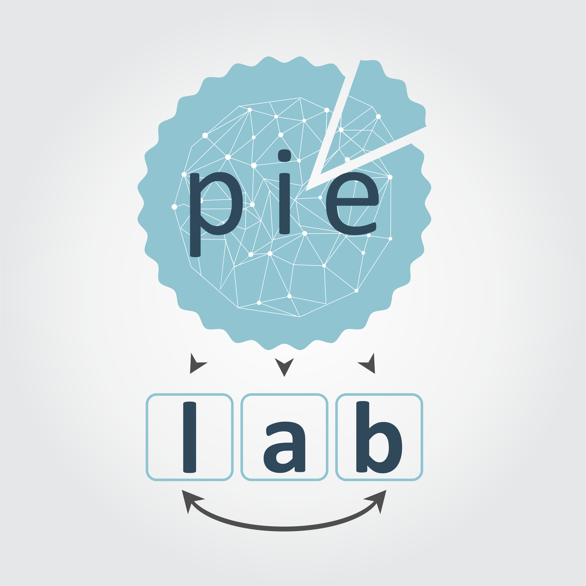

PIE Lab Manual
1
About the lab
1.1
Location
1.2
People
1.2.1
PIs
1.3
Values
1.3.1
Transparency
1.3.2
Curiosity
1.4
Expectations
1.4.1
Honesty
1.4.2
Respect
1.5
Network Drive
1.5.1
Accessing the drive on a Mac
1.5.2
Accessing the drive on a PC
2
Resources
2.1
UO resources
2.1.1
Virtual Private Network (VPN)
2.2
R
2.2.1
Learning R
2.2.2
Reference guides
2.3
Writing
3
Talapas Overview
3.1
Requesting Access
3.2
Using Open OnDemand Interactive Access
3.2.1
Loading files for Interactive Access
3.2.2
To launch an interactive session
3.2.3
To determine the memory usage of jobs previously run
3.2.4
To run a live session of RStudio
3.2.5
Ending your interactive session
3.3
Using Talapas for Batch Jobs
4
Onboarding
4.1
CITI training
4.1.1
Where to get CITI training
4.1.2
Required courses
4.1.3
When you’re done
5
Website and Lab Manual
5.1
Website
5.1.1
Details
5.1.2
Purpose
5.1.3
Current sections
5.1.4
How to update
5.2
Lab Manual
5.2.1
Clone lab manual to your computer
5.2.2
Updating the manual [using the RStudio GUI]
5.2.3
Updating the manual [using the terminal in Rstudio]
5.2.4
Requesting updates
Published with bookdown
PIE Lab Manual
PIE Lab Manual
The PIE lab
2019-10-14
